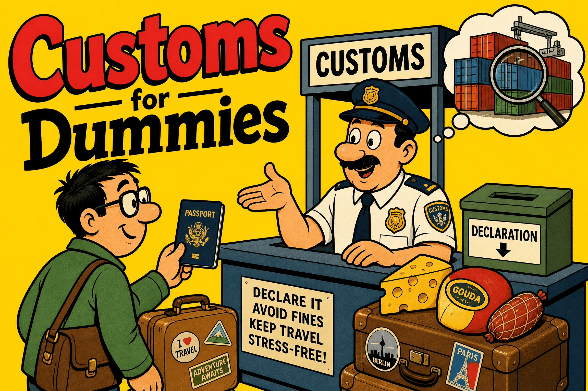
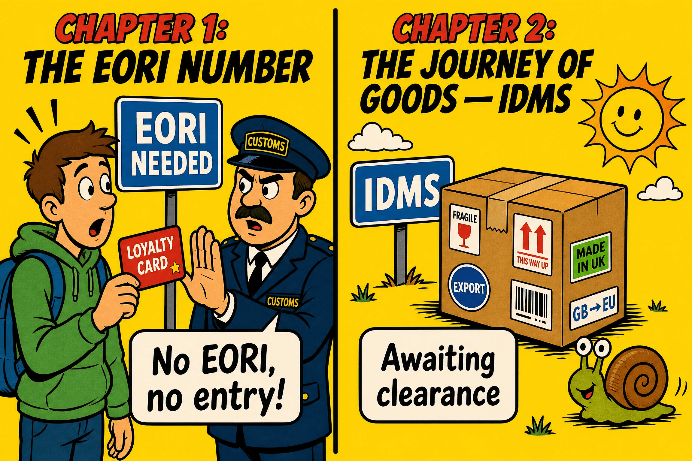
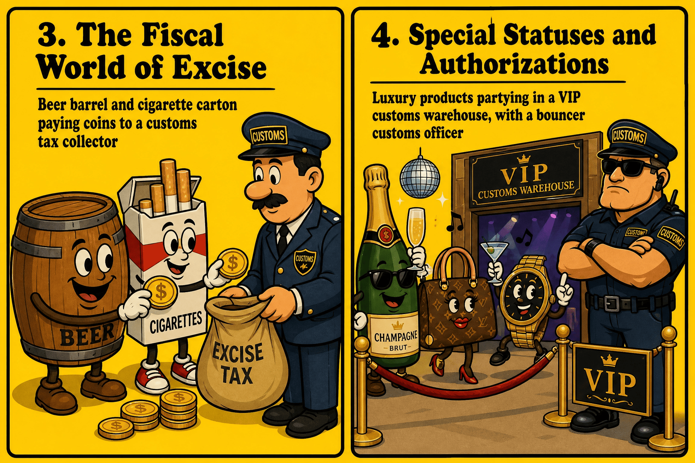
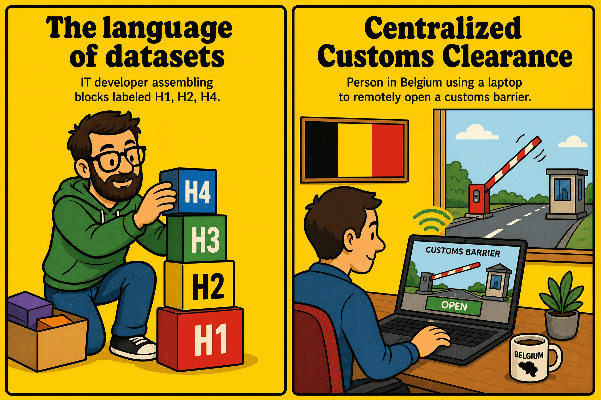
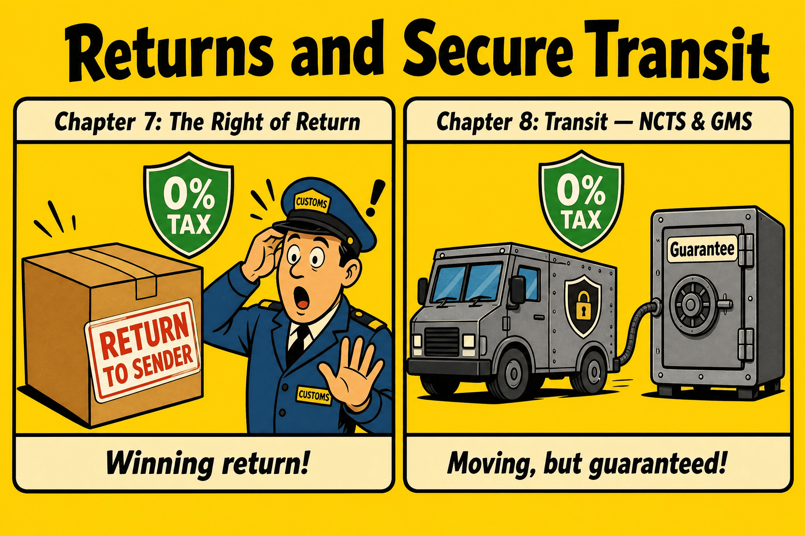
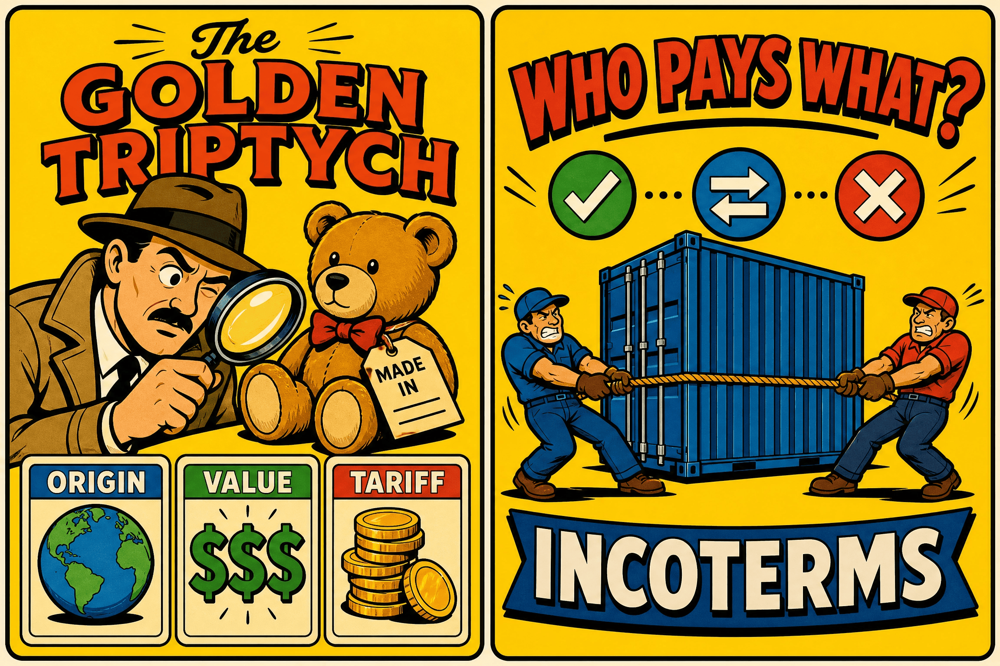
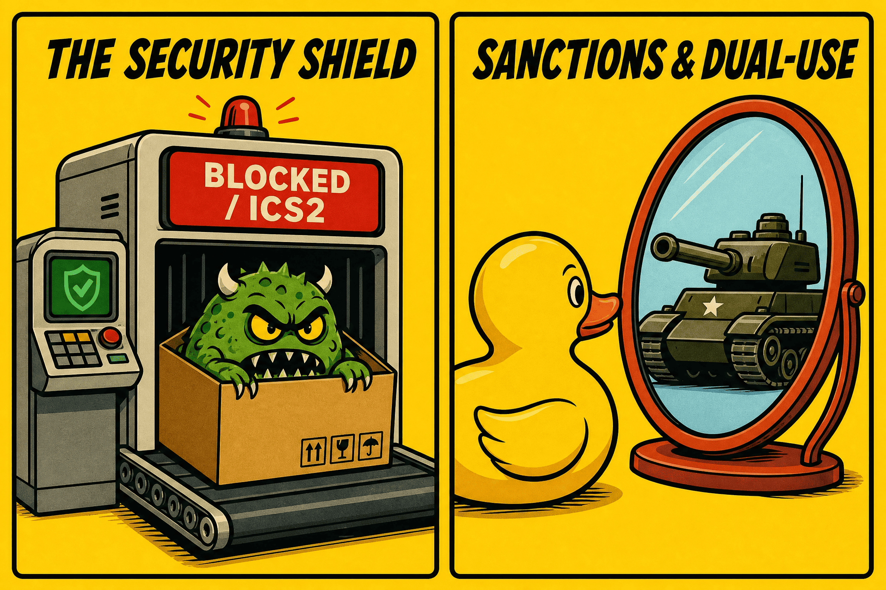
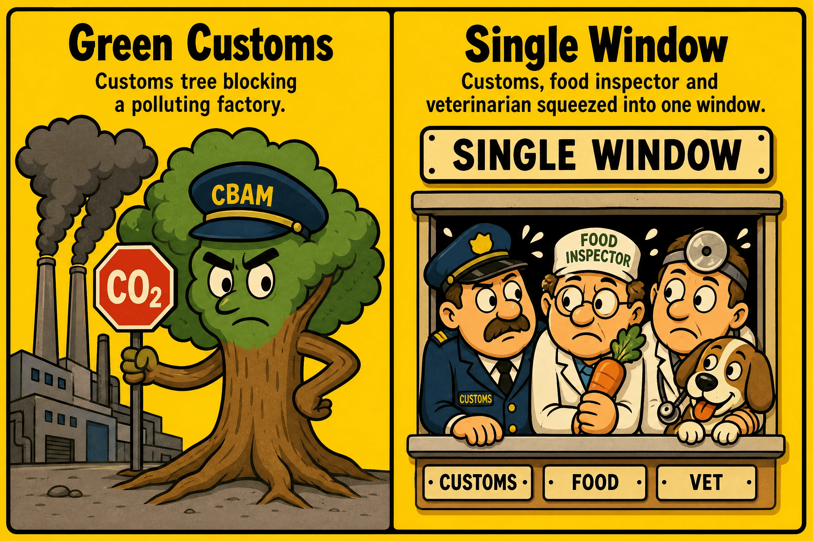
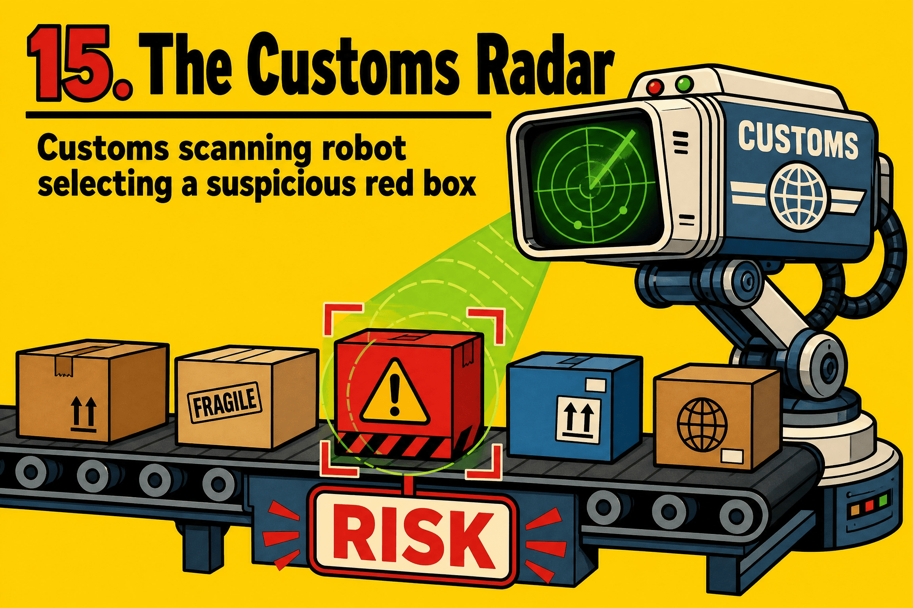

GACE - General Administration of Customs and Excise
July 2026

The integral guide: from EORI to Green Customs, including the CTU, NCTS and Risk Analysis.
A guide written by
Mohamed Amine EL AAJI
Quality Assurance Services (QAS)
Dept. SSDD (Strategic Service for Deployment and Data)
Why this guide?
The world of customs and excise is often perceived as an administrative fortress, built on complex legal texts, obscure acronyms, and extremely strict IT procedures. Yet, behind this apparent austerity lie fascinating mechanisms that are essential to the economic life of our country and the European Union.
This document was born from a simple desire: popularization. It is an attempt to make technical, customs, and fiscal concepts accessible to everyone. Whether you are a new agent joining the administration, a logistics professional seeking to clarify certain processes, or simply a curious mind wanting to understand how goods cross our borders, this guide is made for you.
I have chosen to adopt a deliberately direct, conversational, and pedagogical tone, relying on analogies, simplified diagrams, and numerous practical cases. The objective is not to replace legal texts (which remain the only legal reference), but to provide you with the compass and map needed to navigate this ecosystem peacefully.
Enjoy the read, and welcome to the border!
— Mohamed Amine EL AAJI
I will guide you step by step through the mechanisms of customs regulations and accompany you with explanations and questions throughout our journey. Welcome to our guide "Customs and Excise for Dummies".
To start off well, customs is not simply a physical barrier at the borders. It is simultaneously the security guard and the accountant of an immense shared space: the European Union 🇪🇺. Since the creation of the Customs Union, Member States share a single external border and a common customs tariff. This means that a good from Asia, once cleared in Belgium, can circulate freely to France or Germany without undergoing new customs checks.
The administration's work is built around three main missions:
Today, this entire ecosystem is fully digitized. Every step involves Belgian IT applications interconnected with the European Commission's databases.
To understand customs, you first need to visualize its playing field and know who participates in it.
The European Union forms a single block against the rest of the world: the Customs Territory of the Union (CTU). Inside this territory, European goods circulate freely from one country to another without customs checks. At the external borders (like the port of Antwerp or Brussels-National airport), customs applies the same rules for all goods entering or leaving the EU.
However, beware of traps! The CTU is not an exact copy of the political or geographical map of Europe. Some political territories of the EU are excluded from customs, and conversely, territories outside the EU are included in it.
Ceuta and Melilla: These two cities are enclaves located on the African continent. Although they are politically Spanish (and therefore in the EU), they are strictly excluded from the Customs Territory of the Union. Sending goods from Madrid to Ceuta therefore obligatorily requires an export declaration! (Note: Even if there are specific agreements allowing 0% customs duties upon arrival, the customs border exists and the computer declaration is mandatory).
Monaco and San Marino: two different exceptions. The Principality of Monaco is a sovereign state outside the EU, but through an agreement with France, it is fully included in the CTU. Sending a parcel from Brussels to Monaco requires no customs declaration.
Conversely, San Marino is bound to the EU by a Customs Union (0% taxes) but is not part of the CTU. Consequence: customs formalities (like presenting a T2 or T2L document) remain mandatory at the border!
Büsingen (DE) and Livigno (IT): The city of Büsingen is German, but it forms an enclave entirely surrounded by Switzerland. Result? It is excluded from the European CTU and attached to the... Swiss customs territory! Consequence: sending a good from Belgium to Büsingen amounts to exporting it to Switzerland. An export customs declaration (AES) is therefore formally mandatory.
As soon as a company wants to cross this external border to do business, it cannot remain anonymous. Customs requires a unique identification: the EORI number (Economic Operators Registration and Identification). It is used to identify the company in all EU computer applications.
In Belgium, it begins with the country code BE followed by the 10-digit company number. A single number is enough for the entire Union!
A company from Namur buys computers in Tokyo 🇯🇵. These devices are transported by plane to Liege. At what point does the EORI number become indispensable? Well before landing! Thanks to the European security system ICS2, safety data (the ENS) must be sent to customs even before loading the plane in Tokyo. The EORI is already indispensable there to identify the consignee.
A private individual from Namur orders a smartphone in the US for his personal use. Must he request an EORI? No. The EORI is strictly for economic operators (companies). The administration has provided a generic code for personal purchases: BEPRIVATEPERSON.
Often, the company does not make its declarations itself and delegates this IT task to a broker (customs representative). But beware, access management is divided into two worlds:
When a good crosses the border, it must be declared. In Belgium, the administration uses modern IT systems for each step:
For Import 📥
For Export 📤
For Transit 🔄
Our company in Namur receives its computers from Tokyo in Liege. Instead of paying customs and VAT immediately, they will store them for 3 months. The solution? The customs warehouse. This regime allows a total suspension of taxes. Payment will only be triggered upon exit (release for free circulation) via the IDMS system.
The company in Namur eventually sells half of these stored computers to a customer in Switzerland 🇨🇭 (non-EU). Will they have to pay customs duties? No. The EU does not apply duties upon export. Since they were under tax suspension, they leave without ever having been taxed in Europe. The company uses the AES system to declare the re-export.
The Belgian truck crosses France 🇫🇷 to go to Switzerland, filled with these untaxed computers. To secure this journey, the NCTS is used under the external transit regime (T1) with a tracking number (MRN) and a financial guarantee.
At the Swiss border, customs records the arrival and checks the seals. If everything is fine (Satisfactory), the Belgian guarantee is released (Discharge). But what if the seals are broken? Swiss customs reports discrepancies (Transport incident) in NCTS! The system blocks the financial guarantee and triggers an investigation.

Customs duties have an economic purpose: they make products manufactured outside the EU more expensive to protect our local companies from foreign competition. Excises, on the other hand, have a public health and ecological purpose (and fill state coffers). They tax alcohol, tobacco, and fuels to limit their consumption, regardless of whether they are manufactured in Belgium or imported.
At airports, "Duty Free" shops are in the international zone. Products (alcohol, perfume) are sold there without customs duties, VAT, and excises, because they are intended to leave the European territory immediately with the passenger. But pay attention to the allowed quantities upon return!
Europe uses the very strict EMCS (Excise Movement and Control System) to track these products under duty suspension, accompanied by an electronic document (the e-AD).
Do not confuse! The customs warehouse manages non-EU goods (customs duties/VAT). The tax warehouse allows you to store goods (EU or not) under suspension of excise duties.
A wholesaler in Namur receives a truck of wine from Bordeaux 🇫🇷 covered by an e-AD (via EMCS). He parks the load in his tax warehouse. When does he pay the Belgian excise? At the time of release for consumption (leaving the warehouse for restaurants). To do this, he uses a specific web application called AC4.
And what if a pallet falls and bottles break in the warehouse?
Since there was no release for consumption, customs does not demand the payment of excises (provided there is irrefutable proof of destruction for accounting).
| Excise Status | Store? | Send? | Receive? |
|---|---|---|---|
| Authorized warehousekeeper | Yes | Yes | Yes |
|
Registered consignee (Pays excise upon arrival) |
No | No | Yes |
|
Registered consignor (Sends after import) |
No | Yes | No |
Our Namur wholesaler has no more room in his large building. He wants to order a pallet of Champagne 🇫🇷 and resell it directly by paying the tax immediately upon arrival (without storing it under suspension). The perfect status for him is Registered consignee.
The customs administration is not just a censor, it is also an economic partner that offers a range of authorizations to facilitate international trade. To ensure harmonization, Europe has centralized these requests.
Forget local paper forms. Today, there are 22 European customs authorizations that are all centrally managed via a large European portal dedicated to operators: the CDMS (Customs Decisions Management System). Among these 22 authorizations, we find the most strategic ones:
These "tailor-made" regimes, whose authorization (IP/OP) is managed in the CDMS, allow goods to be processed internationally without paying the full taxes.
Importing engines from China, assembling them into cars in Belgium, then exporting the finished cars to Morocco. The factory uses code H4 in IDMS to obtain a total suspension of taxes upon import.
A workshop in Tournai exports Belgian fabric to Tunisia to sew it, then re-imports the finished suits. Upon return, it will only pay taxes on the foreign added value (the labor).
The car factory tries to import its Chinese engines. The forwarder sends the declaration (code H4 for Inward Processing) in IDMS. But beware: if the factory has not made its request in the European system and the authorization (IP) is not validated and active in the CDMS, the Belgian IT system IDMS immediately rejects the declaration. The company will have to clear normally (H1) by paying the full rate.
To benefit from inward processing, the State requires a financial guarantee to cover the amount of suspended taxes. Do not get your wires crossed between the different systems:
The Charleroi factory has a guarantee of 100,000 €. They already have 90,000 € of engines in the factory. A new container arrives with 20,000 € of potential taxes. What does FINDA do? It blocks the whole container! IDMS does not cut the pear in two.
This is the highest certification in customs (Authorized Economic Operator). It comes in different types according to your needs. Note: This status is issued by Europe and is valid only within the European Union (except in case of MRA, see Chapter 15).
| AEO Type | Main Benefits |
|---|---|
| AEOC (Simplifications) | Easier access to customs regimes, reduction of the comprehensive guarantee, lighter documentary and physical controls. |
| AEOS (Security) | Relief from security controls (e.g., ENS declarations), mutual recognition with third countries. |
| AEOF (Full) | Cumulation of all benefits (AEOC + AEOS). Ideal for a factory that wants its trucks to cross the border with absolute priority. |
The ET14000 authorization is a purely fiscal mechanism linked to Belgian VAT, essential for importing companies.

Forget the old paper Single Administrative Document (SAD). Today, with the Union Customs Code (UCC), Europe has harmonized the structure of information via Datasets.
Imagine these datasets as boxes of LEGOs. The administration does not ask you for the same box depending on what you want to build. Europe has classified these codes by "families" represented by a letter.
The H7 code is a revolution. Before it, every imported parcel required a full H1, unmanageable for platforms handling thousands of shipments.
The H7 is designed specifically for shipments whose value does not exceed 150 €.
What is the risk if a company systematically declares its parcels as "H7" even when their value exceeds 150 €? The risk is a colossal dead loss of customs duties and VAT. By falsely declaring an 800 € smartphone under the H7 code (falsified value at 140 €), the company evades the strict controls of the H1 and normal duties. This is a fraudulent undervaluation that customs massively track down via their risk algorithms.
Until recently, e-commerce enjoyed a golden advantage: any parcel valued under €150 (the famous H7) entered Europe without paying a single cent of customs duties (only VAT was due). Faced with the avalanche of billions of Asian mini-parcels, Europe has ended recess!
Since July 1, 2026, the duty-free allowance is abolished. From now on, a temporary flat-rate customs duty of €3 per item (per declaration line) applies to all distance sales under €150 (B2C).
This flat-rate duty (tax code A00) applies whether the IOSS system is used or not. The goal? To protect our local businesses from unfair competition and to curb the ecological impact of massive low-cost product shipments.
You order on a famous Asian platform: 1 phone case (€5) and 1 USB cable (€3). Your basket is worth €8. The parcel is under €150, so it will be declared under the H7 format.
The "Dummies" Exception (C2C): Note that if your aunt living in Canada sends you a hand-knitted sweater worth €40 (Consumer-to-Consumer Gift - C2C), this €3 tax does not apply! It only targets B2C commercial flows.
B1 for definitive export. B2 for outward processing (OP).
G4 for temporary storage (TSD on the docks pending a decision via the IRP).
We have seen the datasets (H1, etc.). But where should this data be sent? Historically, the goods had to be cleared where they physically arrived. Europe has taken a major step by separating the physical flow from the administrative flow with CCE (Centralised Clearance at Import/Export).
Thanks to CCE, a company can lodge its import declaration in the system of its own country (where it is established), even if the goods physically arrive in another Member State. The two customs administrations communicate with each other behind the scenes in an automated way.
A company in Namur imports toys from China. The ship physically arrives at the port of Rotterdam (Netherlands). Instead of having to mandate a Dutch broker and pay taxes in the Netherlands, the company uses CCE. It lodges its H1 dataset into IDMS (the Belgian system) from its couch in Namur, and pays its taxes in Belgium. The Belgian computer contacts the Dutch computer to give the order to release the container in Rotterdam. And voila!

We have seen how to import and export. But what happens if the exported goods (e.g., e-commerce) turn around and come back to you? This is a very frequent logistical case: the regime of Returned Goods Relief.
The basic principle of customs is to tax import. But if you re-import your *own* product (which had been manufactured or already cleared in the EU) within 3 years and in the same state, you are not going to pay customs duties again. Customs grants a total "relief", provided you can prove that the object is indeed the same.
A Belgian watchmaker exports a watch to a customer in Switzerland (non-EU) via an AES declaration (B1). The Swiss customer receives the watch, notices it is scratched, and sends it back immediately. Upon return of the package, the Belgian declarant uses the IDMS system. By entering the correct relief code (F03) and providing the MRN of the initial export declaration to prove the identity of the watch, he re-imports it paying 0 € in duties and 0 € in VAT!
We have seen that when goods travel across Europe without paying taxes, they do so under the transit regime via the NCTS system. Because the State is taking a risk, a financial guarantee is required via the GMS.
What happens when the truck arrives at its destination? Modern NCTS has become extremely strict.
As soon as the arrival is accepted, a countdown starts (e.g., 15 min). This gives customs time to decide whether to perform a physical control.
If everything is perfect, the declaration is notified as "Satisfactory". The guarantee in the GMS is released.
If the seal is broken or a package is missing, "Not satisfactory" is reported. The NCTS then demands to know the holder's reaction: No opposition (accepts), Opposition (disputes), or Undecided (pending).
A truck arrives in Antwerp. The agent notices that the seal number is not the one declared at departure. He encodes "State of seals : Not OK" in the Unloading remarks. What does NCTS do? It immediately blocks the release of the guarantee in the GMS! The administration will claim the potential duties, as an unauthorized manipulation may have occurred en route.

The equation with three unknowns: Tariff, Origin, Value.
The DNA (HS/TARIC)
The Passport
The Tax Base (€)
Customs does not read descriptions, it reads numbers: the first 6 digits are the worldwide Harmonized System (HS), completed by the Combined Nomenclature and the TARIC (Europe, 10 digits).
A company imports high-end touch tablets (subject to taxes), but the declarant makes a mistake in TARBEL and uses the HS code for "digital photo frames" (taxed at 0%). During a check, the customs officer turns on the screen: tax reassessment and fine for false declaration!
Origin: Do not confuse provenance and origin. Preferential origin (free trade agreements, EUR.1 certificates) can reduce duties to 0%.
Value: Customs taxes the "transaction value" up to the European border (including product cost + sea freight + insurance).
You buy bikes in Geneva (Swiss provenance). But the motor and frame are made in Taiwan. The Swiss company just stuck a label on it. The real origin is Taiwanese: you will pay full duties.
A company declares a container but "forgets" to include the 3,000 € of sea transport in the Declared Value (H1). During an audit, it will have to reimburse the difference in VAT and customs on these 3,000 €.
Customs wants to know: who is legally responsible for the declaration? Who pays the taxes? The International Chamber of Commerce has created a universal 3-letter language: the Incoterms.
A Chinese supplier offers you T-shirts in "EXW Beijing" (cheaper) or "FOB Shanghai". You choose EXW. Worst idea! You will have to hire a forwarder in China to go get the boxes at the factory, and above all, you will be responsible for the Chinese export declaration (a nightmare without a license in China). FOB was the real safe choice.

Today, with ICS2 (Import Control System 2), the rule is simple: no data, no load. The carrier must send a security mini-declaration (the ENS) to Europe even before the goods are in the plane at the other end of the world.
An individual tries to ship a suspicious package with explosives from the Middle East to Brussels by cargo plane. Thanks to the PLACI module of ICS2, Belgian customs receives the data before loading. The algorithm detects a critical risk (Assessment "Do Not Load"). The package will never board the plane at the other side of the world.
Customs does not just monitor money and security at import (ICS2). It also monitors what leaves the EU for geopolitical reasons. Exporting is not always an absolute right, especially in times of international tensions (Embargoes, economic sanctions).
Particular attention is paid to Dual-Use Goods. These are goods created for strictly civil use, but whose technology or materials could be diverted to manufacture weapons or military equipment. Exporting these goods requires very strict licenses.
A Belgian company manufactures high-quality electronic chips for industrial washing machines. It receives a large order from a country currently under European sanctions. At the export declaration (AES), the customs algorithm blocks the operation. Why? Because the army of this embargoed country recovers these civil chips to equip the guidance systems of its combat drones. The Dual-Use export license will be refused.

In 2026, the customs officer is the first bulwark of European ecology. The EU wants to be climate-neutral and uses customs to ensure that the rest of the world respects our efforts.
Importing steel from a country that does not tax CO2 will oblige the company to buy "carbon certificates" from European customs (to compensate for the pollution of the foreign factory and rebalance prices).
To import cocoa or wood, the declarant must prove (via strict GPS coordinates) that the plot where the product grew has not been recently deforested. Otherwise? Immediate blockade in Antwerp.
Customs protects health, environment, and consumers, but it does not work alone! In the field, other government agencies (like the FASFC in Belgium for food safety) are responsible for sanitary or veterinary controls.
To prevent an operator from having to present their paper certificates to three different agencies, Europe has implemented the Single Window (EU CSW-CERTEX). It's a gigantic IT highway where the customs application (IDMS) automatically talks with the applications of other agencies (like TRACES for the FASFC).
A Belgian importer brings in a container of fresh pineapples from Costa Rica. His declarant submits the H1 declaration in IDMS. Before giving its approval, IDMS automatically interrogates the Single Window system to know if the FASFC has validated the phytosanitary certificate. If the FASFC inspector has not ticked the "OK" box in his own software (TRACES), customs blocks the H1 declaration within a second. The two administrations work in perfect synchronization without making a single phone call.

How does customs choose which container to open out of the millions that transit each year? The administration does not choose randomly, it relies on highly advanced data analysis: this is the role of the SEDA rule engine.
The risk does not stop at the borders. If French customs discovers a new method of cocaine concealment, it writes a RIF (Risk Information Form). This is a security alert that is sent to all Member States via the CRMS (Customs Risk Management System). The Belgian algorithm (SEDA) then immediately integrates this threat into its calculations.
Before, the system was rigid: either the declaration passed on green, or it blocked on red. Today, the SEDA 3.0 engine calculates a continuous Risk Score (between 0 and 1) for each declaration. The closer to 1, the more critical it is.
This score is calculated according to 4 main mathematical pillars:
Remember the AEO status (Chapter 4). In SEDA, being AEO applies a "Facilitation": the algorithm mathematically reduces your probability of being checked (for example -50% score). But beware: If SEDA detects an absolute Embargo alert (international sanctions) or if the name of one of the actors appears on a Blacklist (proven fraud), the algorithm literally "cuts" this advantage. The AEO bonus is cancelled and the score goes back to 1 (Mandatory priority control).
Thousands of declarations get a score. But customs does not have the manpower to check 100% of the containers. SEDA therefore uses a Cutoff Threshold. If the threshold is set at 0.70, all declarations below it are ignored by the computer.
Those that exceed the threshold land on the screen of the customs officers (the CRC field team). This decision screen is called the MRA (Manual Risk Analysis) tool.
The customs world loves acronyms, to the point of using the same one for two totally different things!
Once the declaration is targeted on the MRA screen, the customs officer takes action. He has three levels of intervention:
The customs officer remotely checks the consistency of the Golden Triptych by requesting papers (invoices, EUR.1 certificates) via the system.
The container passes through an X-ray gantry on the terminal. The customs officer analyzes the radiographic image to spot suspicious densities without opening the doors.
The ultimate level. The container is opened and physically inspected (sometimes with sniffer dogs or specialized teams) to ensure that reality matches the declaration.
